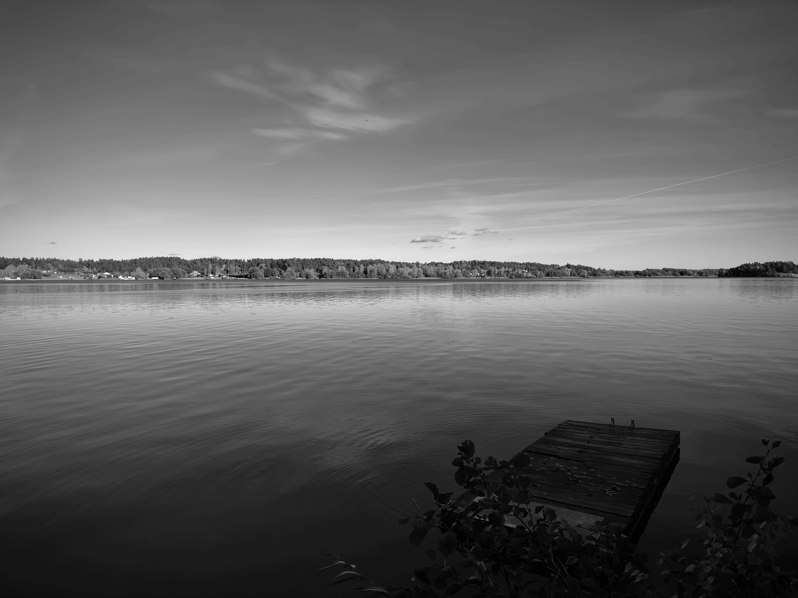

The rain woke me up this morning just after sunrise. I peered through my curtains still half asleep at the world that looked like a Venusian landscape. The sky was golden yellow and a thick fog engulfed the house intermixed with the down pour. With no bearing of time, I momentarily thought I had been transported somewhere new, some other world.
I rolled back over and began to dream.
That world persisted in my mind. I was in an old crooked house on a marsh surrounded by that golden fog. The room was filled with antique clocks all set to different times, with a sticky taped label for each capital city. London, New York, Tokyo and so on.
There was a large wooden box in the middle of the room. Rectangular in size. Coffin like. As I got closer, I heard a scratching from inside, like someone was carving their name into the lid. I had no interest in opening the box and interrupting whatever was making the scratching, so I explored the rest of the room.
A vague lucidity crept in. I’ve had lucid dreams before but this was a significantly more subtle. A feeling of control and that I was driving this experience. Walking over to a tall windowsill I peered out at the fog. It was serene in its desolate vastness. I was on the second floor of a house, situated on what seemed to be a tiny island of dirty sand falling into a black marsh with brackish bubbling water, stretching towards the horizon but disappearing into thick fog.

There was a row boat loosely moored and a hooded figure sitting still within it draped in a tattered black robe. They were waiting for a passenger. I wasn’t afraid. They seemed like they were just there to do a job. The door behind me swung open and I ventured down the crooked staircase. I passed a grim looking kitchen and caught a glimpse of an old oven and stove top. There was something furiously boiling on top and it looked like the dark water from the marsh, getting blacker and purer as it condensed.
I walked outside, towards the hooded boatman. He turned to look at me, his face fixed and made of green tinted glass. I asked him if he wanted me to go with him. He shook his head and pointed back to the top room of the house. Without walking I was there, back in the room with the box, a slight breeze carrying me. The scratching had stopped but I was afraid to open it still. With a clunk the lid came off. It was filled to the brim with black ink, likely refined from the kitchen downstairs. I looked at the underside of the lid, where the scratching had been. A poem had been etched into the top. I can’t remember it, I don’t even know if it was in letters that could ever be read, but I found it beautiful. The world vibrated and rumbled and then shimmered away.
I then woke up. The sky was blue now. Sun shine and soft breeze. Birdsong and the distant buzz of lawnmowers. The golden fog was long gone, so was the boatman and the house. But I still have the ink I think, somewhere in me, and the desire to etch something beautiful somewhere someday.